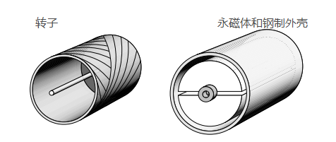

电机与驱动读书笔记（直流电机驱动电路）
据说在1960 年之前，人们还只能通过直流发电机来控制直流电动机，并且要求发电机转速恒定，通过调整励磁来改变输出电压。好不辛苦
现代直流电机的转子部分多采用堆叠硅钢片来减少涡流，这在以前的电机中是不常有的。在励磁恒定（没有饱和）时，直流电机可以看作是一个线性系统。而现在的电机驱动器多采用晶体管电路，使得控制器的效率可以达到 以上，并且成本也更低廉。
电枢电压和电流波形
因为电枢绕组存在着电感，并且电机自身和负载也存在着一定的转动惯量，这就使得尽管驱动电路的电压输出波形变化很大但是电枢电流却相对稳定、平滑，如下图（单相全桥）：
其中电枢电流可以看作由直流分量和交流分量复合而成，并且在不是空载时，交流分量所占的比例很小。一个周期下来，交流分量的作用为0，因此，直流电机的电压平衡方程又可以写作以下形式：
因为电枢绕组具有电阻，电机带载和空载时电枢的平均电流不一样：空载时要小很多。但是，电枢电流中的交流分量是不变的，似乎其至于电枢电感有关？
不连续的电枢电流
在上图中，如果负载减小，电枢电流就会下移。当下移到一定程度时，电流的波谷就会与时间轴重合，这时候如果再下移，因为晶闸管不能反向导电，所以电流的波谷部分被强行削平。这种情况在小型电机和轻载的时候容易出现：
因为驱动电路电流为0 时，电机两端存在反电动势，就会导致电机实际输入的平均电压高于理论值，导致电机转速增加。应用上应当避免此类情况的发生：
可以看到上图中的转速曲线在轻载时明显右偏，但是通过一些手段可以减缓这种现象：
- 电枢串联电感，来使得电枢电流变化尽量小，提高波谷
- 或者采用三相全桥来代替单相桥，使得输出更加平滑
如果采用闭环控制电路的话，则不用担心不连续电流的情况，因为控制器会自动调整驱动电路以达到稳定的转速和扭矩。
重叠时间
一般我们假设整流电路的输出只与其导通角有关，但实际上因为电机存在着阻抗，导致晶闸管在交替开启和关断存在着延迟，表现为驱动电路在极短的时间内输出为0（半开半关形成短路）：
一般这段时间只有微秒级，在使用 的交流电源时，这段时间一般不应超过。
四象限工作
正常的整流电路都只能单向供电，如果我们在某一段时间内需要将电动机应用为发电机，则需要一个机械开关，来对调电机的接线：
并且要保证整流电路的触发角，输出电压为负：
电机由正转到反转一般需要经历下面几个阶段：正转-(降压)-(反接)-正转制动-(转速为0)-(反向升压)-反转加速。一般机械开关的响应时间在200~400ms，通过反向励磁也能达到此类效果，但是响应要更慢一些。在要求切换速度较快的场景下，可以通过两个反向并联的转换器来实现：
需要只注意的是，在正向制动的过程中要控制电枢电流，不能过大，否则可能损坏电机。
功率因数
这种驱动电路有一个缺点就是在高转矩或者低转速的情况下功率因数特别低，甚至在额定转速是其功率因数也小于1。晶闸管交替导通时甚至会影响电源电压的波形，所以必要时还需要假装功率因数校正装置。
双闭环控制
双闭环控制一般是采用两个pid 控制器，电流环在内、转速环在外，来实现对电机转速的控制，其原理图如下：
虽然单独的转速控制也可以，但是响应不如双闭环快，静态误差也有可能会更大。
电流控制
电流控制是驱动系统的核心，因为电枢电流不仅要随着控制信号变化，还不能超过安全区间：
而电流的控制，其实也就是电机输出转矩的控制。
转速控制
好的控制器稳态误差为0。
但是任何闭环控制都不能丢失反馈信号，否则可能会伤害设备或人员。
直流斩波
如果电源本身就是直流，则需要通过斩波降压电路来进行控制：
假设开关电路的导通关断时间比是：，那么其输出电压就是：
在控制器导通时，电机处于加速状态；关断时，电机处于制动状态。通过增加电感、开关频率或者闭环控制，可以使电机运行更加平稳。
伺服电机
直流伺服电机一般都是封装好的，其扭矩一般很大，并且会经常有突然转向的操作。这就要求电机自身的转动惯量和自身电感比较小。
无铁芯电机
- 转子几乎只包含绕组线圈，斜形缠绕
- 没有齿槽
- 转子内部放有永磁体与钢制外壳构成磁路

印制电枢电机
- 一般为盘状或饼状
- 磁通是轴向的，电流是径向的
- 功率大，且因为其外形，适合一些特殊工况
简单的构造可以参考这个链接
控制电路
一般的电机我们要控制速度，而伺服电机需要控制的是位置，也可以说是角度。一般也采用双闭环控制，外环是位置，内环是转速，因为要求转矩尽可能的大，所以对电流倒没有严格限制：
而有无内环的响应比较也如下所示：
记一个名词tacho，表示转速计的意思。